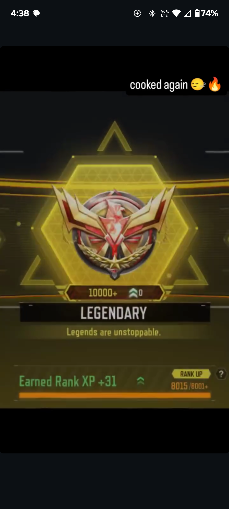
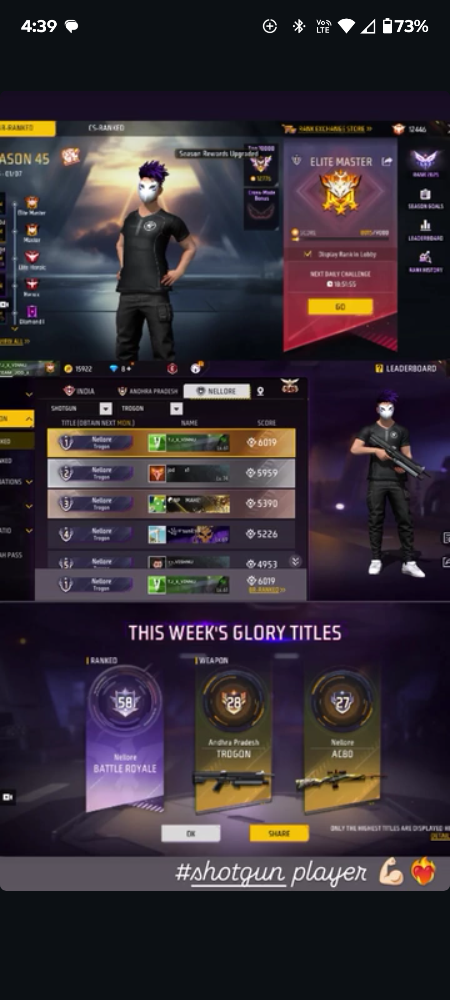
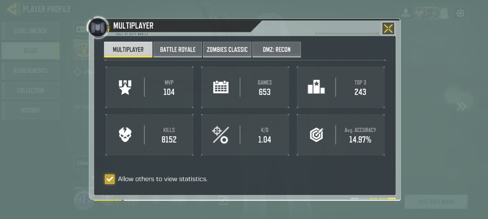

S. Jaswant Kummar
Aspiring BTech Computer Science / AI Student
Email: jaswanthkummar777@gmail.com
About Me
I am a motivated student with strong academic performance and a growing interest in Computer Science
and Artificial Intelligence. I enjoy problem-solving and logical thinking and am currently building
foundational programming projects to prepare for undergraduate studies abroad.
Education
- Class 10 – 93%
- Class 11 – 97%
- Class 12 – Expected 96%
Projects
-
Student Marks Calculator (Python)
Python console-based program to calculate total marks, percentage, and grade.
🔗 View on GitHub
-
Console Text Encryption Tool (Python)
Python console-based application using Caesar Cipher to encrypt
and decrypt text with user-defined shift values.
🔗 View on GitHub
-
Expense Tracker (Python)
Python console-based application to record expenses and view summaries.
🔗 View on GitHub
-
AI Resume Analyzer (Python)
AI tool that analyzes resumes and gives a skill-based score.
🔗 View on GitHub
-
Student Performance Predictor (AI)
Machine learning system that predicts student academic performance.
🔗 View on GitHub
-
AI Fake News Detector
Detects whether a news article is real or fake using AI.
🔗 View on GitHub
Skills
- Python (Beginner)
- Logical Thinking
- Problem Solving
Certifications & Online Learning
✅ Verified Certifications
📘 In-Progress Online Courses
Machine Learning Crash Course – Google
Status: In Progress
Topics: Regression, Classification, Overfitting, ML Systems

🔗 Official Google ML Course
CS50: Introduction to Computer Science – Harvard
Status: In Progress (CS50x 2026)
Topics: C, Python, Algorithms, Data Structures

🔗 Official CS50 Course
🏆 Academic Certificates
Awarded for academic excellence and outstanding performance in school-level examinations.


🎤 Anchoring
Actively participated as an anchor in academic and cultural events, demonstrating strong communication skills, stage confidence, and leadership.


▶ Watch anchoring video on YouTube
🏏 Cricket (Team Captain)
Served as the captain of the school cricket team and led the team to 1st place
in the annual sports meet. This experience strengthened my leadership, teamwork, and
decision-making skills.


💃 Dancing
Performed dance at school cultural events and celebrations, showcasing confidence,
coordination, rhythm, and teamwork.


▶ Watch dance performance on YouTube
🎬 Video Editing, Tutorials & Sound Design (My YouTube Channel)
🏅 Certifications
-
CS50: Introduction to Computer Science – Harvard University
View Certificate
-
Machine Learning Crash Course – Google for Developers
Topics: Classification, Regression, Categorical Data, Overfitting, Production ML Systems
View Course
-
Python for Data Science – IBM Skills Network
Issued via IBM Acclaim (Digital Badge)
I run and manage my own YouTube channel where I publish original content related to
video editing, educational tutorials, and creative sound design. This channel reflects
my interest in digital creativity, technical skills, and consistent self-learning.
-
Gameplay Video Editing:
Edited gameplay clips using transitions, effects, timing, and visual storytelling.
-
Tutorial Content:
Created step-by-step tutorials explaining editing techniques and in-game mechanics,
demonstrating clarity of explanation and teaching ability.
-
Creative Sound Design:
Produced original music compositions using in-game sound effects (such as gun sounds),
showcasing creativity, rhythm understanding, and audio experimentation.
My YouTube Channel & Playlist:
👉 View my original videos and editing work on YouTube
🎮 Competitive Gaming Achievement
Achieved high competitive rankings in online multiplayer games through consistent
practice, strategic gameplay, and disciplined performance. This experience strengthened
my focus, decision-making under pressure, analytical thinking, and perseverance.
- Reached Legendary / Elite-level competitive ranks
- Maintained consistent performance across multiple seasons
- Demonstrated strategic planning, reaction speed, and teamwork



📈 Editing Skill Progression (Advanced Level)
As my editing skills improved, I began creating high-quality short-form videos showcasing
advanced transitions, timing precision, visual effects, and synchronization with audio.
These videos represent the level I reached through continuous practice and self-learning.